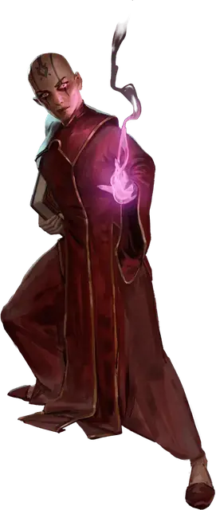

Ученик мага
Mage Apprentice
Средний или Маленький Гуманоид (Волшебник), Нейтральный

Класс Защиты 15 Инициатива +2 (12)
Хиты 49 (9к8 + 9)
Скорость 30 футов
| мод | спас | ||
|---|---|---|---|
| СИЛ | 8 | −1 | −1 |
| ЛОВ | 14 | +2 | +2 |
| ТЕЛ | 12 | +1 | +1 |
| мод | спас | ||
|---|---|---|---|
| ИНТ | 16 | +3 | +5 |
| МДР | 13 | +1 | +3 |
| ХАР | 10 | +0 | +0 |
Чувства пассивное Восприятие 13
Языки Общий
Опасность 2 (450 опыта; БВ +2)
Действия
Волшебный всплеск. Бросок рукопашной или дальнобойной атаки: +5, досягаемость 5 фт. или дистанция 120 фт. Попадание: 14 (2к10 + 3) Силового урона.
Сотворение заклинаний. Ученик мага сотворяет одно из следующих заклинаний (заклинательная характеристика — Интеллект, Сл спасброска заклинаний 13, +5 к попаданию атак заклинаний):
Неограниченно: Волшебная рука, Фокусы
1/день каждое: Волна грома, Доспехи мага, КЗ, Ледяной кинжал, Маскировка
Бонус мастерства +2
Среда обитания Любая
Сокровища Личные, Магические
Маги
Маги — это заклинатели и творцы чудес всех мастей от властелинов-волшебников до затворниц-ведьм. Они изучают мистические тайны и обладают глубокими познаниями о чудовищах, легендах, знамениях и прочих премудростях. Маги часто привлекают союзников или нанимают помощников, чтобы те помогали им в изысканиях или обретении магического могущества.
Совершите бросок по таблице «Разновидности магов» для вдохновения или выберите сами подходящий тип мага.
Разновидности магов
| 1к10 | Маг — это… |
| 1 | Взывающий за магией ко звёздам астроном. |
| 2 | Сочинитель оккультных манускриптов. |
| 3 | Инженер — изобретатель магических диковинок. |
| 4 | Толкующий предзнаменования оракул. |
| 5 | Юный талант с наследственным волшебным даром. |
| 6 | Псионик, чьи заклинания — психические силы. |
| 7 | Исследующий древние загадки учёный. |
| 8 | Придворный прорицатель у престола владыки. |
| 9 | Поддерживающий войска боевой колдун. |
| 10 | Ведающая тайные премудрости ведьма. |
Ученики мага — заклинатели скромных способностей. Одни из них учатся у признанных магов-мастеров, другие обладают врождённым даром.